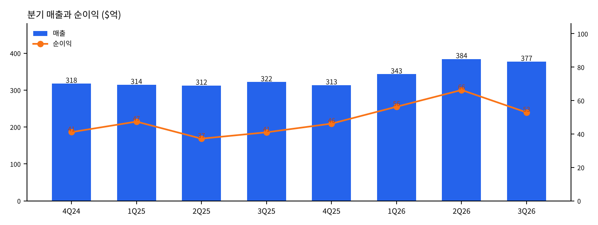
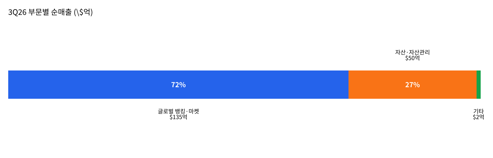
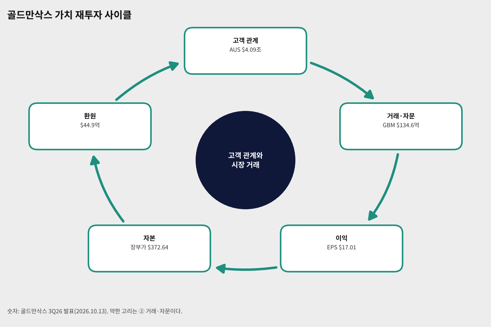

골드만삭스는 M&A 자문·기업 자금 조달·주식·채권·통화·원자재 트레이딩과 자산관리를 하는 투자은행이다. 이번 분기 주식 트레이딩(프라임 파이낸싱·파생)이 실적을 끌어올렸지만 투자은행 수수료 대기 물량은 직전 분기보다 줄었다.
| 항목 | 내용 |
|---|---|
| 종목 | Goldman Sachs (GS) · NYSE · 금융(투자은행) · 뉴욕 |
| 멀티플 | PER·P/S는 08·09 항목 표 참조 |
| 최근 분기(3Q26) | 순매출 $186.8억, 순이익 $52.9억, EPS $17.01 |
| 관리 자산 | AUS $4.09조, 총자산 $2.18조 |
| 직원 수 | 약 47,400명(트레이딩뷰) |
| 직책 | 인물 | 역할·특징 |
|---|---|---|
| 회장·CEO | 데이비드 솔로몬(David Solomon) | 시장 선도 사업과 고객 관계, 지속 투자가 장기 이익 성장을 이끈다고 설명 |
| CFO | 데니스 콜먼(Denis Coleman) | (확인 필요: 이번 조사에서 직접 인용 없음) |
경영 스타일: '고객 관계 중심의 선도 사업에 집중'. 3Q 콜에서 금융(파이낸싱) 수익의 지속성과 자본 배분을 논의했다는 요약이 있다.
주식 파이낸싱·파생 중개가 주식 매출을 끌어올렸다.
관리 자산 $4.09조, 분기 순유입 $830억으로 반복 수익을 키운다.
다음 실적발표는 세 가지 질문에 답하는 자리다.
1. 투자은행 수수료 대기 물량이 회복되나?
2. 주식 매출 급증이 유지되나?
3. 비용 증가가 매출 증가를 따라가나?
한 줄 판정 규칙: 첫 질문(대기 물량)이 회복되고 둘째 질문(주식 매출)이 유지되면 약한 고리(대기 물량 감소)가 풀린다.
일정: 4Q26 실적 발표는 트레이딩뷰 기준 2027.01.19(확인 필요).
| 분기 | 매출 | 순이익 | EPS | 조정 EPS | 특이 사항 |
|---|---|---|---|---|---|
| 4Q24 | $317.5억 | $41.1억 | 11.95 | 11.95 | |
| 1Q25 | $314.3억 | $47.4억 | 14.12 | 14.12 | |
| 2Q25 | $312.3억 | $37.2억 | 10.91 | 10.91 | |
| 3Q25 | $321.6억 | $41.0억 | 12.25 | 12.25 | |
| 4Q25 | $313.2억 | $46.2억 | 14.01 | 14.01 | |
| 1Q26 | $342.9억 | $56.3억 | 17.55 | 17.55 | |
| 2Q26 | $384.2억 | $66.3억 | 20.98 | 20.98 | |
| 3Q26 | $377.0억 | $52.9억 | 17.01 | 17.01 |
3Q26 순매출 $186.8억(+23%, 직전 분기 대비 -8%), 순이익 $52.9억(+29%), EPS $17.01(회사 발표 2026.10.13). 표의 매출은 트레이딩뷰 총수익(이자수익 포함)이라 회사 순매출과 다르다. 조정 EPS를 따로 발표하지 않아 GAAP와 같다. 매출·순이익·EPS(GAAP 희석)는 트레이딩뷰 스캐너, 조정 EPS는 트레이딩뷰 실적 페이지의 Reported 값이다. 분기 정렬은 오래된 분기→최신이다.

흐름 요약: 최근 분기 매출은 $377.0억로 전년 동기 $321.6억 대비 +17.2%, 순이익은 $52.9억(전년 $41.0억)다. 최근 4분기 GAAP EPS는 $69.55, 조정 EPS는 $69.55다.
| 부문 | 내용 | 3Q26 순매출 | 비고 |
|---|---|---|---|
| 글로벌 뱅킹·마켓 | 투자은행·주식·채권 | $134.6억 | +32% |
| 자산·자산관리 | 자산관리·사모 투자 | $50.5억 | +14% |
| 기타(플랫폼 솔루션 등, 내 계산) | 총액 − 위 두 부문 | $1.7억 | 총 $186.8억 |

글로벌 뱅킹·마켓이 순매출의 약 72%(내 계산)다. 그중 주식은 $64.4억으로 가장 크다.
골드만삭스는 '글로벌 고객에게 금융 자문·자금 조달·시장 서비스를 제공하는 선도 투자은행'이 되는 것을 목표로 한다.
| 축 | 내용 |
|---|---|
| 트레이딩 | 주식 $64.4억(+72%) |
| 자문·조달 | 투자은행 수수료 $32.2억(+21%) |
| 자산관리 | AUS $4.09조 |

| 이동평균 | 값 | 종가 대비 | 위치 |
|---|---|---|---|
| 5일선 | $894.48 | -2.4% | 종가 아래 |
| 20일선 | $899.63 | -2.9% | 종가 아래 |
| 50일선 | $912.65 | -4.3% | 종가 아래 |
| 100일선 | $978.43 | -10.8% | 종가 아래 |
| 200일선 | $954.88 | -8.6% | 종가 아래 |
52주 고가 $1,153.99(2026-07-15)·저가 $754.00(2025-11-21) 범위에서 종가 $873.18는 모든 이동평균선 아래이고.
| 규칙 | 기준 | 현재 값 | 신호 |
|---|---|---|---|
| 장기 추세 필터 | 종가 vs 200일선 | $873.18 < $954.88 | 매도 |
| 중장기 교차 | 50일선 vs 200일선 | $912.65 < $954.88 | 매도 |
| 단기 교차 | 20일선 vs 50일선 | $899.63 < $912.65 | 매도 |
| 돈키언 채널 | 55일 고가 $1,043.84 / 저가 $854.45 | 중간값 $949.14 아래 | 매도 |
| 1개월 모멘텀 | 21거래일 수익률 | -1.3% (기준 $884.81) | 매도 |
| 3개월 모멘텀 | 63거래일 수익률 | -12.9% (기준 $1,001.95) | 매도 |
| 6개월 모멘텀 | 126거래일 수익률 | -11.1% (기준 $982.12) | 매도 |
| 12개월 모멘텀 | 252거래일 수익률 | +12.6% (기준 $775.56) | 매수 |
| 종합 (8개 평균) | -0.75 | 강한 매도 |
해석: 매수 신호 1개(12개월 모멘텀), 매도 신호 7개(장기 추세 필터, 중장기 교차, 단기 교차, 돈키언 채널, 1개월 모멘텀, 3개월 모멘텀, 6개월 모멘텀). CTA 점수 -0.75(강한 매도). 14일 ATR $30.40 (3.5%), 52주 고가 $1,153.99 · 저가 $754.00.
| 가격 | 기준 | 무엇이 바뀌나 |
|---|---|---|
| $1,043.84 | 55일 고가 | 돌파 시 채널 상단 갱신 |
| $1,001.95 | 3개월 모멘텀 기준가 | 종가가 이 가격 위면 3개월 신호 매수 |
| $982.12 | 6개월 모멘텀 기준가 | 종가가 이 가격 위면 6개월 신호 매수 |
| $954.88 | 200일선 | 종가가 이 선 위/아래인지로 장기 추세 신호가 바뀜 |
| $949.14 | 돈키언 중간값 | 55일 채널 중간값 위/아래로 신호가 바뀜 |
| $884.81 | 1개월 모멘텀 기준가 | 종가가 이 가격 위면 1개월 신호 매수 |
| $854.45 | 55일 저가 | 이탈 시 채널 하단 갱신 |
| $775.56 | 12개월 모멘텀 기준가 | 종가가 이 가격 위면 12개월 신호 매수 |
가격 수준은 신호가 바뀌는 기준선일 뿐 진입·청산 가격 제안이 아니다. 20일/50일 교차는 이동평균 자체가 움직여 단일 가격으로 표시하지 않았다. 일봉·주봉은 종가 기준 직접 계산(고저 데이터 미사용)이다.
| 악재 요인 | 내용 | 강도 |
|---|---|---|
| 시장 변동성 의존 | 주식·파이낸싱 매출 급증 | 중간 |
| 투자은행 대기 물량 | 직전 분기 대비 감소 | 중간 |
| 비용 증가 | 운영비 +20% | 중간 |
| 직전 분기 대비 감소 | 순매출 -8%(2Q 대비) | 참고 |
| 티커 | 회사 | PER(TTM) | PEG | P/S | EPS 성장(YoY) |
|---|---|---|---|---|---|
| GS | 골드만삭스 | 12.6배 | 0.30 | 1.78배 | +41% |
| MS | 모건스탠리 | 14.4배 | 0.49 | 3.59배 | +29% |
| JPM | JP모건 | 13.6배 | 0.77 | 4.34배 | +18% |
| BAC | 뱅크오브아메리카 | 11.7배 | 0.82 | 2.90배 | +14% |
| C | 씨티그룹 | 11.4배 | 0.26 | 1.85배 | +44% |
비교 결론: 골드만삭스 PER은 모건스탠리와 비슷한 구간이다.
은행·증권사는 EBITDA와 현금성 자산 구분이 달라 일부 지표를 생략했다. 순부채 계산은 의미가 없다.
| 지표 | 값 | 출처 | 해석 |
|---|---|---|---|
| 현금·단기투자 | – | 트레이딩뷰 스캐너(최근 분기) | |
| 총부채 | $8,424억 | 트레이딩뷰 스캐너(최근 분기) | |
| 순부채(부채−현금) | – | 내 계산 | 현금 대비 부채 부담 |
| 잉여현금흐름(TTM) | $1,504억 | 트레이딩뷰 스캐너 | |
| TTM 매출 | $1,417억 | 트레이딩뷰 스캐너 |
| 기준 | 매출 | P/S | 비고 |
|---|---|---|---|
| 내 계산(종가 ÷ 최근 4분기 매출 합계) | $1,417.3억 | 1.78배 | 시총은 정렬용 데이터에서만 사용 |
| 동종(트레이딩뷰) | – | MS 3.59배 · JPM 4.34배 · BAC 2.90배 · C 1.85배 | 11.19 |
해석: P/S 3.73배는 모건스탠리(3.59배)와 비슷하다.
은행·증권사는 EBITDA를 쓰지 않으므로 순이익·EPS 성장과 PEG로 본다.
| 지표 | 값 | 산출 |
|---|---|---|
| EBITDA(TTM) | – | 은행·증권사는 EBITDA를 산출하지 않아 생략 |
| EBITDA 마진 | – | EBITDA ÷ TTM 매출(내 계산) |
| FCF 마진 | 106.1% | FCF ÷ TTM 매출(내 계산) |
| PER(GAAP TTM) | 12.6배 | $873.18 ÷ $69.55 |
| PER(조정 TTM) | 12.6배 | $873.18 ÷ $69.55 |
| 방식 | PER | EPS 성장률 | PEG | 판정 |
|---|---|---|---|---|
| GAAP EPS (TTM $69.55) | 12.6배 | +41% ($49.23 → $69.55) | 0.30 | 적극 매수 |
| 조정 EPS (TTM $69.55) | 12.6배 | +41% ($49.23 → $69.55) | 0.30 | 적극 매수 |
판정: GAAP EPS 기준 PEG 0.30 → 0.5 이하(적극 매수 구간) PEG 기준은 1.0 이하 투자 적격, 0.5 이하 적극 매수다. EPS 성장률은 최근 4분기 EPS 합계를 직전 4분기 합계와 비교한 값(내 계산)이고, 일회성 항목이 있으면 조정 EPS 행을 함께 본다.

골드만삭스의 사이클은 고객 관계 → 거래·자문 수익 → 이익 → 자본 → 환원이다.
| 고리 | 현재 숫자 | 고리 강도 | 약해지는 신호 |
|---|---|---|---|
| ① 고객 관계 | AUS $4.09조, 분기 순유입 $830억 | 강함 | 유입 둔화 |
| ② 거래·자문 | GBM $134.6억(+32%) | 강함 | 변동성 감소 |
| ③ 이익 | EPS $17.01, 순이익 $52.9억 | 강함 | 비용 +20% |
| ④ 자본 | 주당 장부가 $372.64 | 보통 | 규제 자본 |
| ⑤ 환원 | 분기 $44.9억 | 강함 | 실적 변동 |
사이클의 특징: 가장 약한 곳은 ② 거래·자문이다. 시장 변동성과 대기 물량에 따라 크게 움직인다.